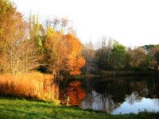
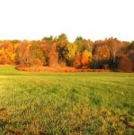

West Parish Meadow
Features:
West Parish Meadow, one of the few true meadows remaining in town, has several small ponds, beautiful expanses of wildflowers, and many birds. A self-guiding nature trail booklet is available from AVIS.
History:
In 1992, AVIS purchased West Parish Meadow from nearby West Parish Church.


Size:
28 acres
Location:
Red Spring Road and Reservation Road
Parking:
Red Spring Road and West Parish Cemetery Lots
Warden Information:
Lewis Trumbore
lewistrumbore@gmail.com
(978) 604-1184